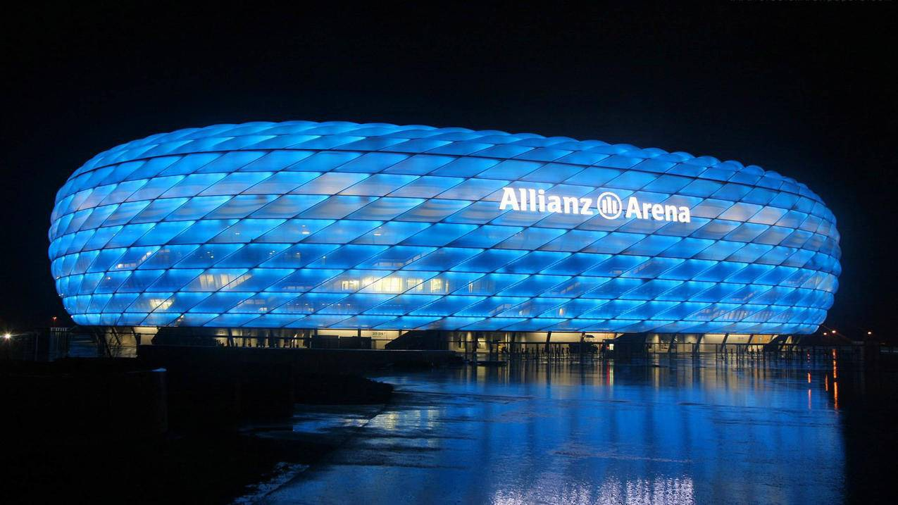
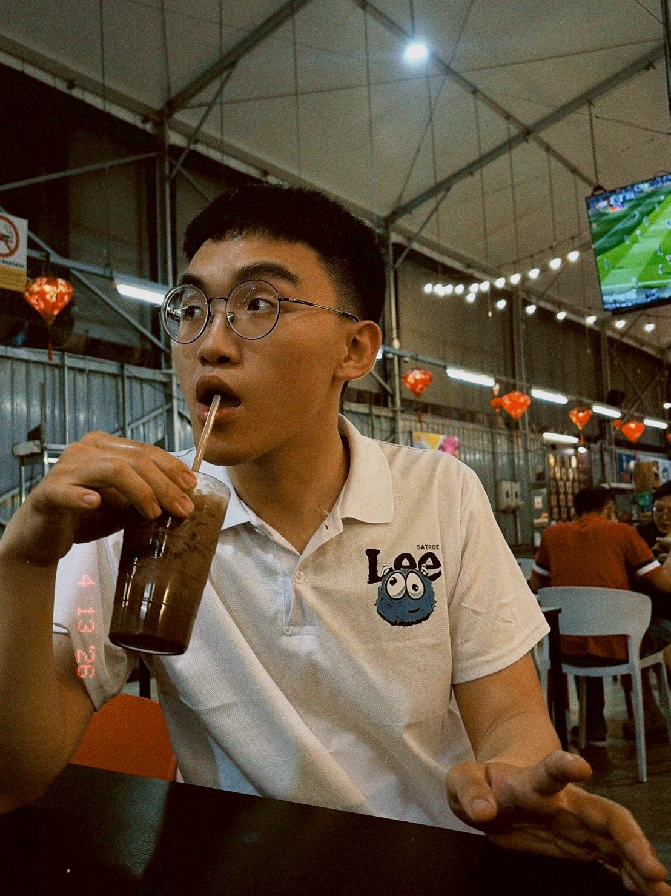

歡迎來到實習成果發表
你好，我是李裕祥。在安聯人壽家鼎通訊處實習期間，我致力於深耕壽險產業的專業知識，並學習如何為客戶提供最切實的保障規劃。
當前目標： 透過數據洞察與需求分析，縮短民眾的「保障缺口」，落實保險真正的核心價值。
請透過左側選單（行動裝置請見上方選單）切換查看各個實習階段的詳細紀錄。
2026 實習成果發表會
你好，我是李裕祥。在安聯人壽家鼎通訊處實習期間，我致力於深耕壽險產業的專業知識，並學習如何為客戶提供最切實的保障規劃。
當前目標： 透過數據洞察與需求分析，縮短民眾的「保障缺口」，落實保險真正的核心價值。
請透過左側選單（行動裝置請見上方選單）切換查看各個實習階段的詳細紀錄。

安聯集團是源自德國的全球金融龍頭，業務核心由保險與資產管理雙軌驅動。在台灣，其影響力尤以「安聯人壽」與「安聯投信」最為顯著。
安聯人壽長期穩居外資壽險第一，核心優勢在於投資型保險，利用數位工具提供精準的退休規劃。

實習學生：李裕祥
實習單位：家鼎通訊處 Allianz
實習職位：專業壽險顧問
實習時間：2025/07/07 ~ 2026/06/30
此區塊尚在整理中，將陸續補上實習期間的專案紀錄與學習歷程。
最初接觸保險產業，是源於一組令我震撼的數據：民國97年壽險投保率雖達 203%，平均年繳保費達 8.8 萬元，但保障額度卻僅約 60.9 萬。這巨大的落差讓我開始反思產業現狀，也成為我加入安聯人壽家鼎通訊處的契機。
作為壽險顧問，我致力於透過深度對談挖掘客戶的真實需求。即便當時缺乏經驗，公司完善的培訓資源與對年輕世代的重視，讓我能快速學習並解決問題。因此，我決定畢業後即全力投入安聯人壽，將保險作為終身事業發展。
在這一年間我也學到很多不同的知識和方法，解決了無數次問題，未來也樂意幫助更多學弟妹來到安聯實習。